Candidate UI only. Stage 01 structure and Stage 02 gate are preserved. No merge or production integration.
Approved Stage 02 · Validation / handoff
Approved gate, floor, wall and cast retained. New wave / Guide / settings frames. Approved portrait frame reused.
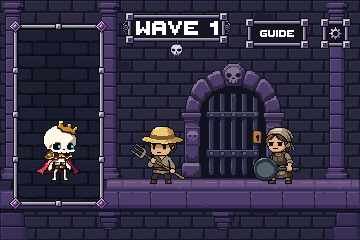
Separate native-scale study, not a new production layout. Approved 64×64 cells and gems; unchanged scalable board frame. Existing icons and progress frame. New resonance and consumable frames.
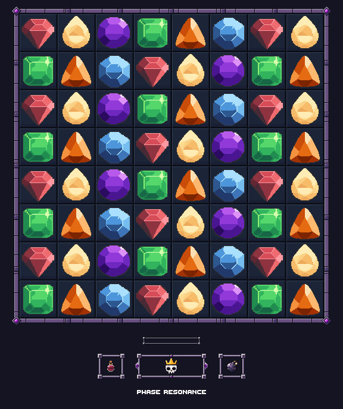
Native canvases shown below. No image scaling was used to create the asset files.
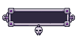
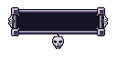
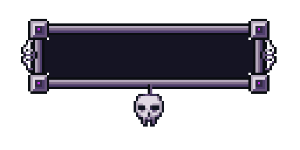
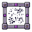
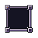
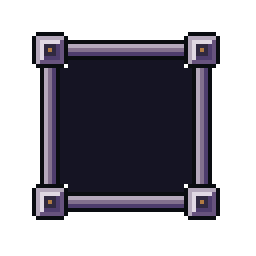
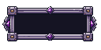
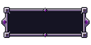
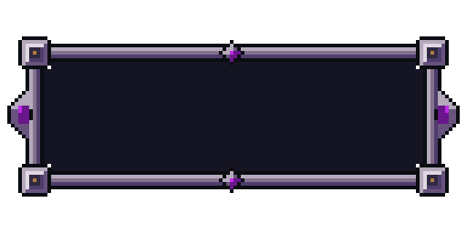
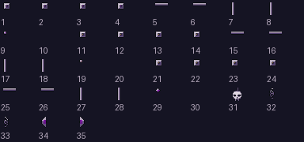
Corners and rails are independent. Insets overfill behind masks. Ornaments are complete separate sprites, outside the clipped interior.